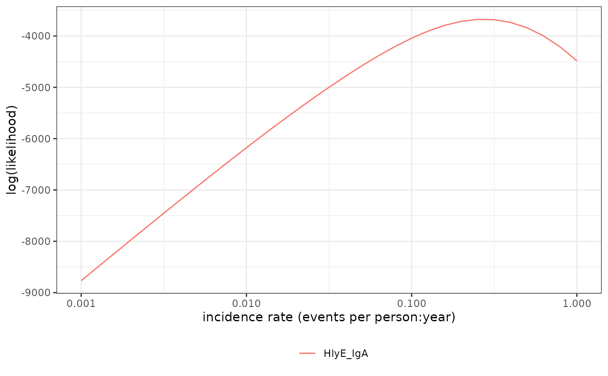

Graph log-likelihood of data
Arguments
- pop_data
a
data.frame()with cross-sectional serology data by antibody and age, and additional columns- curve_params
a
data.frame()containing MCMC samples of parameters from the Bayesian posterior distribution of a longitudinal decay curve model. The parameter columns must be named:antigen_iso: acharacter()vector indicating antigen-isotype combinationsiter: aninteger()vector indicating MCMC sampling iterationsy0: baseline antibody level at $t=0$ ($y(t=0)$)y1: antibody peak level (ELISA units)t1: duration of infectionalpha: antibody decay rate (1/days for the current longitudinal parameter sets)r: shape factor of antibody decay
- noise_params
a
data.frame()(ortibble::tibble()) containing the following variables, specifying noise parameters for each antigen isotype:antigen_iso: antigen isotype whose noise parameters are being specified on each rownu: biological noiseeps: measurement noisey.low: lower limit of detection for the current antigen isotypey.high: upper limit of detection for the current antigen isotype
- antigen_isos
Character vector listing one or more antigen isotypes. Values must match
pop_data.- x
sequence of lambda values to graph
- highlight_points
a possible highlighted value
- highlight_point_names
labels for highlighted points
- log_x
should the x-axis be on a logarithmic scale (
TRUE) or linear scale (FALSE, default)?- previous_plot
if not NULL, the current data is added to the existing graph
- curve_label
if not NULL, add a label for the curve
- ...
Arguments passed on to
log_likelihoodverboselogical: if TRUE, print verbose log information to console
Examples
library(dplyr)
library(tibble)
# Load cross-sectional data
xs_data <- load_pop_data("https://osf.io/download//n6cp3/")
# Load curve parameters and subset for the purposes of this example
dmcmc <- load_curve_params("https://osf.io/download/rtw5k/") %>%
filter(antigen_iso %in% c("HlyE_IgA", "HlyE_IgG")) %>%
slice(1:100, .by = antigen_iso)
# Load noise parameters
cond <- tibble(
antigen_iso = c("HlyE_IgG", "HlyE_IgA"),
nu = c(0.5, 0.5), # Biologic noise (nu)
eps = c(0, 0), # M noise (eps)
y.low = c(1, 1), # Low cutoff (llod)
y.high = c(5e6, 5e6)) # High cutoff (y.high)
# Graph the log likelihood
lik_HlyE_IgA <- # nolint: object_name_linter
graph_loglik(
pop_data = xs_data,
curve_params = dmcmc,
noise_params = cond,
antigen_isos = "HlyE_IgA",
log_x = TRUE
)
lik_HlyE_IgA # nolint: object_name_linter
